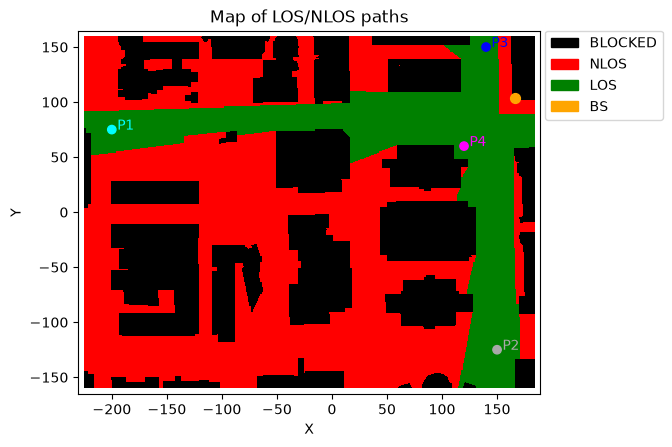
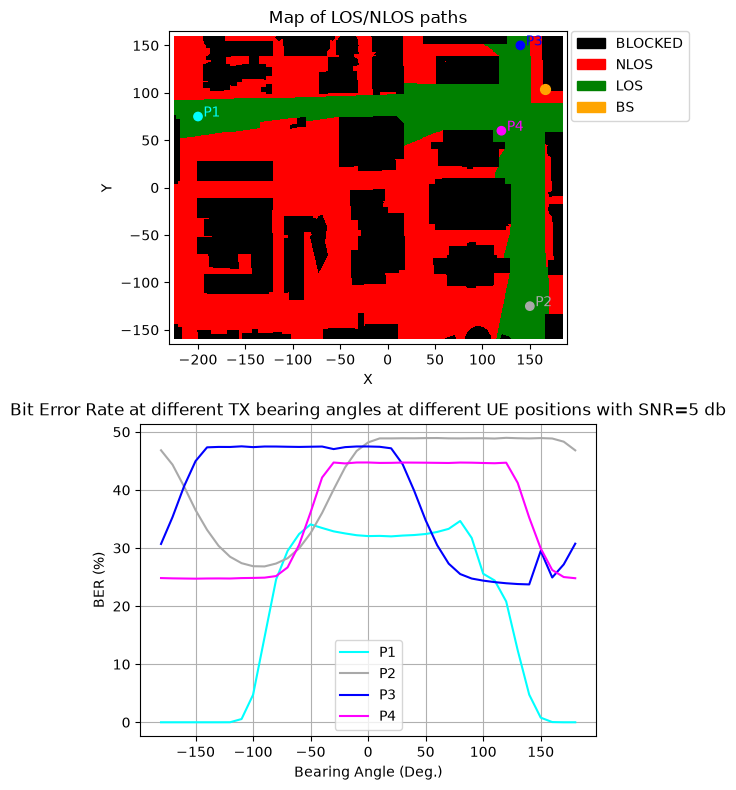
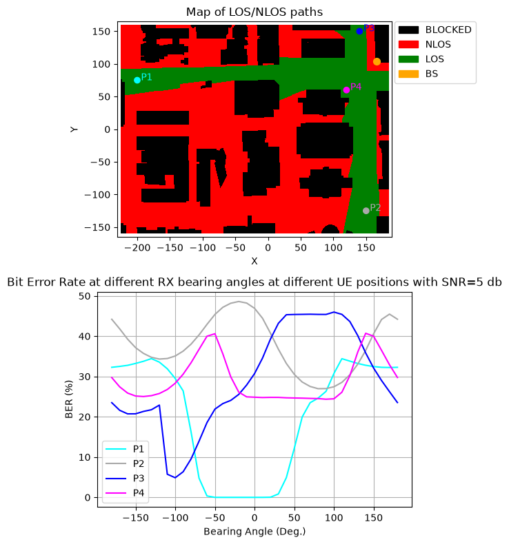

Ray-tracing BER at Various TX/RX Antenna Bearing Angles
This notebook runs an end-to-end simulation of communication through ray-tracing channel models and measures the bit error rate (BER) at different bearing angles for both the transmit and receive antennas.
[1]:
import numpy as np
import scipy.io
import time
import matplotlib.pyplot as plt
from neoradium import DeepMimoData, TrjChannel, Trajectory, Carrier, PDSCH, AntennaPanel, Grid, random
[2]:
# Replace this with the folder on your computer where you store DeepMIMO scenarios
dataFolder = "/data/RayTracing/DeepMIMO/Scenarios/V4/"
DeepMimoData.setScenariosPath(dataFolder)
# Create a DeepMimoData object
deepMimoData = DeepMimoData("asu_campus_3p5")
deepMimoData.print()
DeepMimoData Properties:
Scenario: asu_campus_3p5
Version: 4.0.0a3
UE Grid: rx_grid
Grid Size: 411 x 321
Base Station: BS (at [166. 104. 22.])
Total Grid Points: 131,931
UE Spacing: [1. 1.]
UE bounds (xyMin, xyMax) [-225.55 -160.17], [184.45 159.83]
UE Height: 1.50
Carrier Frequency: 3.5 GHz
Num. paths (Min, Avg, Max): 0, 6.21, 10
Num. total blockage: 46,774
LOS percentage: 19.71%
[3]:
# We create channels between the base station and these four points
points = [[-200,75], [150,-125], [140,150], [120,60]]
colors = ["cyan", "darkgray", "blue", "magenta"]
# Create the carrier:
carrier = Carrier(startRb=0, numRbs=25, spacing=30) # Carrier with 25 Resource Blocks, 15KHz subcarrier spacing
bwp = carrier.curBwp # The only bandwidth part in the carrier
# Let's draw the map and show the above four points on the map with small blue circles
ax = deepMimoData.drawMap("LOS-NLOS")
x = [point[0] for point in points]
y = [point[1] for point in points]
ax.scatter(x=x, y=y, c=colors)
for i, point in enumerate(points):
ax.annotate(f"P{i+1}", (x[i], y[i]), textcoords="offset points", xytext=(10,0), ha='center', color=colors[i])
# Create 1-point trajectories. Each trajectory contains only one point. Since we just want to study the bearing
# angles, we don't need a real trajectory.
trajectories = []
for point in points:
gridXy = deepMimoData.xyToGridXy(point)
gridIdx = deepMimoData.gridXyToIndex(gridXy)
trajPoint = deepMimoData[gridIdx]
trajPoint.speed = np.array([14.0,0.0,0.0])
trajPoint.sampleNo = 1
trajectories += [Trajectory([deepMimoData[gridIdx]], deepMimoData.carrierFreq)]

[4]:
def getBitrateInfo(numSlots, snrDbs, freqDomain, pdsc, trajectory, txAlphas, rxAlphas, seed=123, quiet=False):
results = {} # Dictionary to save the results
for snrDb in snrDbs:
random.setSeed(seed) # Making the results reproducible.
t0 = time.time()
results[snrDb]={}
if not quiet:
print(f"\nSimulating end-to-end at SNR={snrDb} db in {'frequency' if freqDomain else 'time'} domain for different TX/RX antenna orientations.")
print("TxAlpha RxAlpha Total Bits Bit Errors BER(%) Slot time(Sec.)")
print("------- ------- ---------- ---------- ------ ----- ----------")
for txAlpha in txAlphas:
results[snrDb][txAlpha] = {}
for rxAlpha in rxAlphas:
channel = TrjChannel(bwp, trajectory,
txAntenna = AntennaPanel([2,4]), # 8 TX antenna
txOrientation = [txAlpha,0,0],
rxAntenna = AntennaPanel([1,2]), # 2 RX antenna
rxOrientation = [rxAlpha,0,0],
seed = seed)
bitErrors = 0
totalBits = 0
for slotNo in range(numSlots):
pdsch.initGrid() # Create and initialize PDSCH's internal grid
numBits = pdsch.getBitCapacity()[0] # Actual number of bits available in the resource grid
txBits = random.bits(numBits) # Create random binary data
# Now populate the resource grid with coded data. This includes QAM modulation and resource mapping.
pdsch.setPdschData(txBits)
# Getting the Precoding Matrix, and precoding the resource grid
channelMatrix = channel.getChannelMatrix() # Get the channel matrix
precoder = pdsch.getPrecodingMatrix(channelMatrix) # Get the precoder matrix from PDSCH object
txGrid = bwp.createGrid(channel.nrNt[1]) # Create the transmitted resource grid
pdsch.precodeTo(txGrid, precoder) # Perform precoding
if freqDomain:
rxGrid = txGrid.applyChannel(channelMatrix) # Apply the channel in frequency domain
rxGrid = rxGrid.addNoise(snrDb=snrDb) # Add noise
else:
txWaveform = txGrid.ofdmModulate() # OFDM Modulation
maxDelay = channel.getMaxDelay() # Get the max. channel delay
txWaveform = txWaveform.pad(maxDelay) # Pad with zeros
rxWaveform = channel.applyToSignal(txWaveform) # Apply channel in time domain
noisyRxWaveform = rxWaveform.addNoise(snrDb=snrDb, bwp=bwp) # Add noise
offset = channel.getTimingOffset() # Get timing info for synchronization
syncedWaveform = noisyRxWaveform.sync(offset) # Synchronization
rxGrid = syncedWaveform.ofdmDemodulate(bwp) # OFDM demodulation
estChannelMatrix = channelMatrix @ precoder[None,...] # Perfect Channel Estimation
eqGrid, llrScales = pdsch.equalize(rxGrid, estChannelMatrix)# Equalization
rxBits = pdsch.getHardBits(eqGrid)[0] # Demodulation
bitErrors += np.abs(rxBits-txBits).sum() # Calculating number of bit errors
totalBits += numBits
if not quiet:
print("\r %4d %4d %8d %8d %6.2f %6d %6.2f"%(txAlpha, rxAlpha, totalBits, bitErrors,
bitErrors*100/totalBits, slotNo+1,
time.time()-t0), end='')
dt = time.time()-t0 # Total time for this SNR
results[snrDb][txAlpha][rxAlpha] = {"totalBits":totalBits,
"bitErrors":bitErrors,
"BER": bitErrors*100/totalBits,
"Time": dt}
if not quiet:
print("\r %4d %4d %8d %8d %6.2f %6d %6.2f"%(txAlpha, rxAlpha, totalBits, bitErrors,
bitErrors*100/totalBits, slotNo+1, dt))
return results
Different TX Bearing Angles
[5]:
# Create a PDSCH object
pdsch = PDSCH(bwp, numLayers=2, nID=carrier.cellId, modulation="16QAM")
pdsch.setDMRS(prgSize=0, configType=2, additionalPos=2) # Specify the DMRS configuration
txAlphas=range(-180,181,10)
rxAlphas=[0]
# Draw the map and the four points again for the reference
fig, ax = plt.subplots(2,1, figsize=(6,8))
ax0 = deepMimoData.drawMap("LOS-NLOS", ax=ax[0])
x = [point[0] for point in points]
y = [point[1] for point in points]
ax0.scatter(x=x, y=y, c=colors)
for i, point in enumerate(points):
ax0.annotate(f"P{i+1}", (x[i], y[i]), textcoords="offset points", xytext=(10,0), ha='center', color=colors[i])
snrDb=5
for i,trj in enumerate(trajectories):
print(f"Running at UE position P{i+1}: ({trj[0].xyz[0]:.2f}, {trj[0].xyz[1]:.2f}) ...")
allResults = getBitrateInfo(numSlots=50, snrDbs=[snrDb], freqDomain=True,
pdsc=pdsch, trajectory=trj, txAlphas=txAlphas, rxAlphas=rxAlphas,
quiet=True)
if len(rxAlphas)==1: bers = [allResults[snrDb][txAlpha][rxAlphas[0]]["BER"] for txAlpha in txAlphas]
else: bers = [allResults[snrDb][txAlphas[0]][rxAlpha]["BER"] for rxAlpha in rxAlphas]
ax[1].plot(range(-180,181,10), bers, label=f"P{i+1}", color=colors[i])
ax[1].set_title(f"Bit Error Rate at different {'TX' if len(rxAlphas)==1 else 'RX'} bearing angles at different UE positions with SNR={snrDb} db");
ax[1].grid()
ax[1].legend()
ax[1].set_xlabel("Bearing Angle (Deg.)")
ax[1].set_ylabel("BER (%)")
plt.tight_layout()
plt.show()
Running at UE position P1: (-199.55, 74.83) ...
Running at UE position P2: (150.45, -125.17) ...
Running at UE position P3: (140.45, 149.83) ...
Running at UE position P4: (120.45, 59.83) ...

Different RX Bearing Angles
[6]:
txAlphas=[180]
rxAlphas=range(-180,181,10)
# Draw the map and the four points again for the reference
fig, ax = plt.subplots(2,1, figsize=(6,8))
ax0 = deepMimoData.drawMap("LOS-NLOS", ax=ax[0]) # Draw the Map with the trajectory
x = [point[0] for point in points]
y = [point[1] for point in points]
ax0.scatter(x=x, y=y, c=colors)
for i, point in enumerate(points):
ax0.annotate(f"P{i+1}", (x[i], y[i]), textcoords="offset points", xytext=(10,0), ha='center', color=colors[i])
snrDb=5
for i,trj in enumerate(trajectories):
print(f"Running at UE position P{i+1}: ({trj[0].xyz[0]:.2f}, {trj[0].xyz[1]:.2f}) ...")
allResults = getBitrateInfo(numSlots=50, snrDbs=[snrDb], freqDomain=True,
pdsc=pdsch, trajectory=trj, txAlphas=txAlphas, rxAlphas=rxAlphas,
quiet=True)
if len(rxAlphas)==1: bers = [allResults[snrDb][txAlpha][rxAlphas[0]]["BER"] for txAlpha in txAlphas]
else: bers = [allResults[snrDb][txAlphas[0]][rxAlpha]["BER"] for rxAlpha in rxAlphas]
ax[1].plot(range(-180,181,10), bers, label=f"P{i+1}", color=colors[i])
ax[1].set_title(f"Bit Error Rate at different {'TX' if len(rxAlphas)==0 else 'RX'} bearing angles at different UE positions with SNR={snrDb} db");
ax[1].grid()
ax[1].legend()
ax[1].set_xlabel("Bearing Angle (Deg.)")
ax[1].set_ylabel("BER (%)")
plt.tight_layout()
plt.show()
Running at UE position P1: (-199.55, 74.83) ...
Running at UE position P2: (150.45, -125.17) ...
Running at UE position P3: (140.45, 149.83) ...
Running at UE position P4: (120.45, 59.83) ...

[ ]:
[ ]: